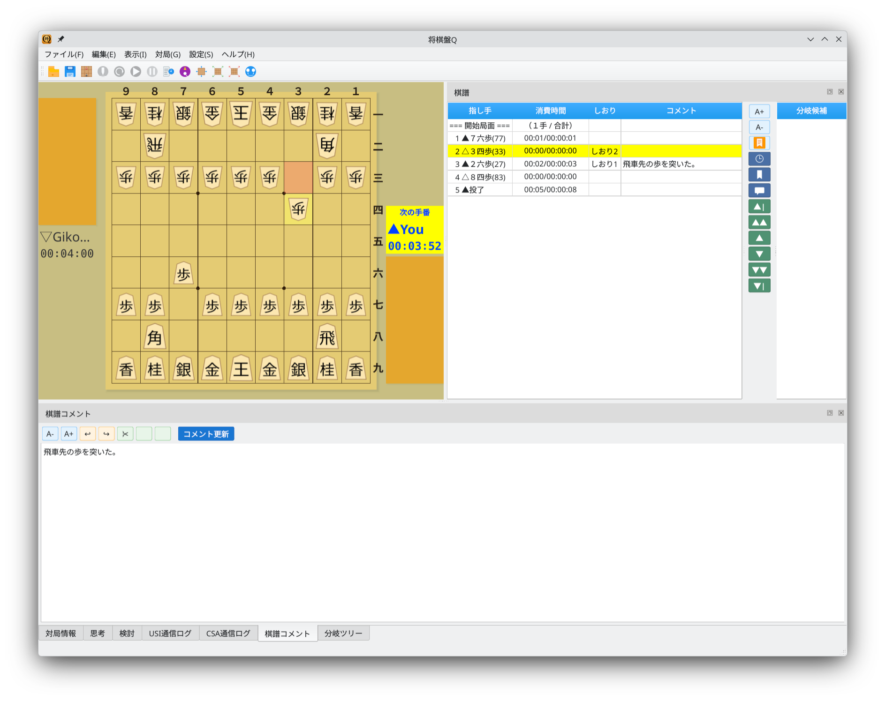

しおり
重要な局面にしおりを付けて、すばやくアクセスできます
1
しおりの編集
しおりを付けたい指し手を選択し、ツールバーの「しおりを編集」ボタンをクリックします。「しおりを編集」ダイアログが開くので、しおり名を入力して「OK」をクリックします。

しおりを編集ダイアログ：しおり名を入力して保存
2
しおりの表示
設定したしおりは棋譜ドックのしおり列に表示されます。しおりが設定された指し手には、しおり名が表示されます。しおりを削除するには、しおり名を空にして保存します。

しおり追加後：棋譜ドックのしおり列にしおり名が表示される